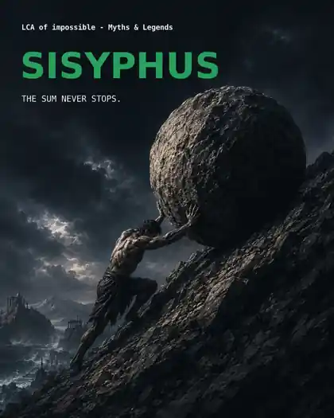
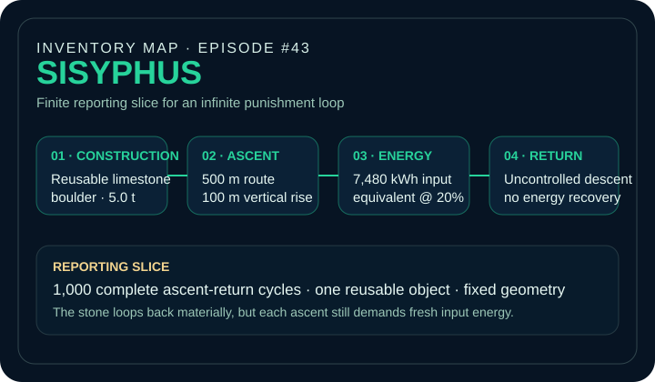
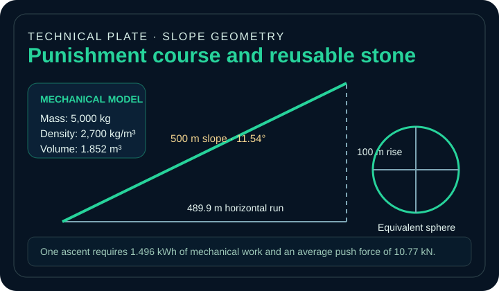
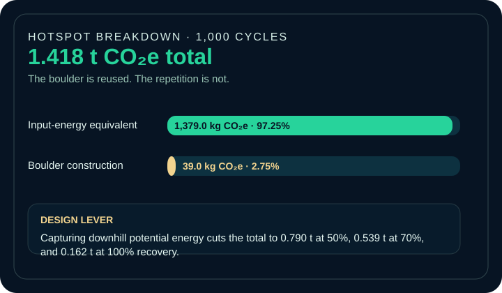

EPISODE #43 · MYTHS & LEGENDS
Sisyphus
What happens when the object is reused forever, but the effort is not?
THE SUBJECT
A finite slice of eternity.
Homer defines the loop: a monstrous stone is pushed toward a hill crest, its weight sends it back down, and the effort begins again. The model turns that endless punishment into a finite reporting slice of 1,000 ascent-return cycles.
Boulder mass, route geometry, rolling resistance, conversion efficiency and cycle count are explicit reconstruction assumptions rather than claims from the ancient text.
Reporting slice
1,000 complete punishment cycles. Eternity itself has no finite footprint.
Boulder
One reusable 5.0 t limestone sphere, 1.852 m³ volume and 1.524 m equivalent diameter.
Mechanics
1.496 kWh of mechanical work and an average push force of 10.77 kN per ascent.
Main hotspot
The input-energy equivalent contributes 97.25% of the 1,000-cycle footprint.
VISUAL MODEL
The punishment becomes a system
A compact visual reconstruction of the reusable stone, the route geometry and the repeated energy loop.


LIFE CYCLE INVENTORY
The engineered loop
The material loop closes every time the stone returns. The energy loop does not.
| Stage | Component / activity | Activity data | Climate change | Modelling basis |
|---|---|---|---|---|
| Construction | Reusable limestone boulder | 5.0 t | 39.0 kg CO₂e | DEFRA 2026 aggregates, primary material use |
| Ascent | Potential-energy work | 1.3625 kWh mechanical / cycle | Included in energy proxy | m × g × h; 91.08% of mechanical work |
| Ascent | Rolling-resistance work | 0.1335 kWh mechanical / cycle | Included in energy proxy | Crr = 0.02 over 489.9 m horizontal run; 8.92% |
| Ascent | Input-energy equivalent | 7.480 kWh / cycle · 7,480 kWh / 1,000 cycles | 1,379.0 kg CO₂e | 20% conversion efficiency; combined DEFRA 2026 electricity proxy |
| Return | Potential energy dissipated | 1.363 kWh / cycle · 1.363 MWh cumulative | 0 kg CO₂e in main case | Uncontrolled return; no powered descent and no recovery |
Included
One 5 t aggregate boulder, potential-energy work, rolling-resistance work and the 20% input-energy conversion proxy.
Excluded
Food and physiology, hill and track construction, maintenance, dust, transport, supervision and end of life.
Factor logic
DEFRA 2026 factors are used for the aggregate boulder and electricity proxy. Electricity is an accounting proxy, not a claim about Hades' actual energy source.
HOTSPOT
The stone fades. Repetition does not.
Across the 1,000-cycle slice, the fixed material burden becomes secondary while the repeated energy proxy grows linearly.

Main result
1.418 t CO₂e
For 1,000 complete punishment cycles.
Per cycle
1.418 kg CO₂e
The stone is reused; the ascent is repeated.
Input-energy equivalent
1,379.0 kg CO₂e
97.25% of the total result.
Boulder construction
39.0 kg CO₂e
Only 2.75% across the full reporting slice.
Return-energy sensitivity
Recovering downhill potential energy cuts the result to 0.790 t at 50%, 0.539 t at 70%, and 0.162 t CO₂e at ideal 100% capture.
Geometry sensitivity
A 50–150 m vertical rise gives 0.792–2.043 t CO₂e; a 1–10 t boulder gives 0.284–2.836 t CO₂e.
Key interpretation
The stone approaches zero impact per cycle as reuse accumulates. The energy term never does, so cumulative GWP has no finite endpoint without a declared reporting slice.
Cumulative model
GWP(N) = 39.015 kg + 1.379010 kg × N
The fixed boulder stays constant while the repeated energy term grows without bound.
THE VERDICT
The stone returns.
The material loop closes.
The energy loop does not.
The sum never stops.